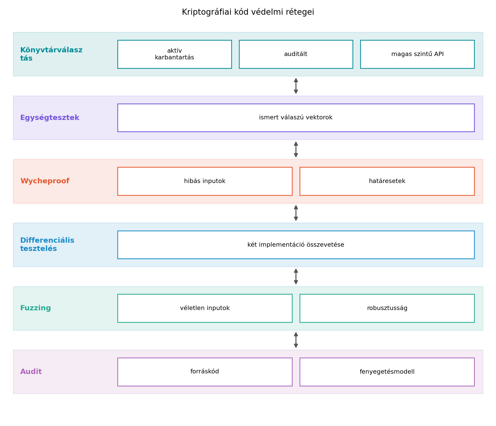

Egy alkalmazásban a kriptográfiai biztonság szinte soha nem azon múlik, hogy valaki feltöri az AES-t vagy a SHA-256-ot. A gyakorlati incidensek többsége abból fakad, hogy a fejlesztő rossz könyvtárat választott, alacsony szintű API-t használt félre, nem tesztelt hibás bemenetekkel, vagy egy olyan függőséget húzott be, amelyet évek óta nem frissítettek. A kriptográfiai primitívek matematikai biztonsága szükséges, de nem elégséges feltétel: kell egy megbízható implementáció, egy biztonságosan használható API, és egy folyamatosan ellenőrzött integráció. Ez az alfejezet azt a mérnöki kérdést járja körül, hogyan válasszunk, teszteljünk és tartsunk karban kriptográfiai kódot anélkül, hogy magunk írnánk a primitíveket.
A kriptográfiai kód biztonsága egymásra épülő rétegeken múlik: a könyvtárválasztáson, a determinisztikus teszteken, a hibás inputok elleni ellenőrzésen, a folyamatos tesztelésen és a külső átvizsgáláson. A rétegek közül egyik sem pótolja a másikat; ha például csak a „happy path” teszteket futtatjuk, a hibás inputok elleni védelem hiányozni fog.

Az ábra szemlélteti: a legalsó réteg a könyvtárválasztás, mert ha oda már sérülékeny kód kerül, a fölötte lévő tesztek csak a hibát rögzítik, nem védik meg a futó rendszert.
Definíció. Kriptográfiai könyvtárnak nevezzük azt a szoftverkomponenst, amely primitíveket (például AEAD-titkosítást, hash-függvényt, digitális aláírást) valósít meg és tesz elérhetővé API-n keresztül. A könyvtárválasztás során a következő szempontokat érdemes egyszerre vizsgálni:
cryptography (pyca)
csomag például az AESGCM, ChaCha20Poly1305,
X25519PrivateKey, Ed25519PrivateKey,
rsa, padding, HKDF,
Scrypt osztályokat adja, így a fejlesztőnek nem kell kézzel
kezelnie az IV-t, a kitöltést vagy a kulcsütemezést. Az alacsony szintű
API-k (például nyers AES-blokk műveletek) nagyobb hibalehetőséget
hordoznak.Ellenőrzőlista könyvtárválasztáshoz. (recipe)
Definíció. A tesztvektor (known answer
test, KAT) egy bemenet–kimenet pár, amelyet egy független, megbízható
forrásból származó implementációval vagy szabvánnyal rögzítettek.
Például a SHA-256(b”abc”) lenyomat ismert, ezért bármely
hashlib-implementáció ellenőrizhető.
A tesztvektorok szerepe nem annak igazolása, hogy az algoritmus helyes matematikailag, hanem hogy a telepített implementáció megfelel a szabványnak, és nem történt-e például bájtsorrend-hiba, kihagyott konstans vagy helytelen kitöltés. A NIST, az IETF RFC-k és a gyártók rendszeresen publikálnak hivatalos tesztvektorokat.
Példa (worked example). Az RFC 4231 definiál
HMAC-SHA256 tesztvektorokat. Az első vektor: kulcs 20 bájt
0x0b, üzenet b"Hi There", a várt MAC
hexadecimálisan
b0344c61d8db38535ca8afceaf0bf12b881dc200c9833da726e9376c2e32cff7.
Ha a Python hmac modulja ezt visszaadja, akkor az
implementáció ezen a ponton konzisztens a szabvánnyal. Az alábbi
Python-illusztrációban bemutatjuk, hogyan lehet ezt egységtesztté
alakítani.
A hagyományos tesztvektorok csak a helyes bemenetekre adott helyes kimeneteket ellenőrzik. A Wycheproof projekt (Google C2SP) ezzel szemben azt vizsgálja, hogy az implementáció helyesen utasítja el a hibás bemeneteket, illetve nem produkál-e gyenge vagy nem szabványos viselkedést. A tesztek olyan eseteket tartalmaznak, mint:
Megjegyzés. A Wycheproof-tesztek célja nem a teljes biztonság bizonyítása, hanem a leggyakoribb implementációs hibák kiszűrése. A tesztek futtathatók több könyvtárra, és a hibák jelzik, ha egy API rosszul kezeli a hibás bemeneteket.
Alkalmazás. A Wycheproof adatbázis JSON formátumban
érhető el; a tesztek futtatásához a fejlesztőnek a saját könyvtára
API-ját kell bekötnie. Egy Python-projektben például az
AESGCM.decrypt hívásnak InvalidTag kivételt
kell dobnia, ha a címke hibás, és nem szabadna visszaadnia semmilyen
részeredményt.
Definíció. A differenciális tesztelés (differential testing) során két független implementációt ugyanazokkal a bemenetekkel futtatunk, és ellenőrizzük, hogy a kimeneteik azonosak. Ha az egyik implementáció eltér, az vagy az egyik hibájára, vagy a specifikáció félreértésére utal.
Definíció. A fuzzing olyan automatizált tesztelési technika, amely véletlenszerűen vagy mutációval generált bemeneteket küld egy szoftvernek, és figyelembe veszi az összeomlásokat, memóriahibákat, váratlan kivételeket vagy eltérő kimeneteket.
A kriptográfiai fuzzing célja elsősorban a robusztusság ellenőrzése:
mi történik, ha a bemenet hossza nem megfelelő, a görbepont nem
érvényes, a nonce üres, vagy a tanúsítvány mérete hatalmas? A
differenciális fuzzing pedig a két implementáció közötti eltérést
keresi, ami gyakran specifikáció-eltérést jelez. A gyakorlatban a
libFuzzer vagy az AFL++ (folyamatos futtatásra
az OSS-Fuzz, Pythonban az Atheris, kriptokönyvtárak differenciális
összevetésére a Cryptofuzz; ellenőrzendő) építhető be a CI-folyamatba;
az eszközválasztás projektfüggő.
Az auditálás a forráskód szisztematikus átvizsgálása a biztonsági követelmények és a fenyegetésmodell alapján. Egy kriptográfiai audit jellemzően ellenőrzi:
A FIPS 140-3 az amerikai NIST által kiadott szabvány a kriptográfiai modulok biztonsági követelményeiről. A tanúsítás igazolja, hogy egy hardveres vagy szoftveres modul megfelel bizonyos biztonsági szinteknek (például 1–4. szint), beleértve a kulcskezelést, az öntesztet és a fizikai védelmet. A FIPS 140-3 tanúsítás fontos bizonyos iparágakban (például kormányzati beszerzések), de nem helyettesíti a projekt saját kockázatelemzését: egy FIPS-tanúsított modul is használható rosszul, és a tanúsítás nem garantálja, hogy az alkalmazás egésze biztonságos. A szabvány pontos követelményeit és az aktuális érvényességi állapotot mindig a kiadó NIST-oldalról érdemes ellenőrizni.
A kriptoagilitás nem csupán azt jelenti, hogy „sok algoritmust támogatunk”. A biztonságos kriptoagilitás a következőket foglalja magában:
A függőségkezelés gyakorlati oldala: használjunk
requirements.txt-t vagy lockfájlt, ismerjük a tranzitív
függőségeket, és állítsunk be automatikus figyelmeztetést a
sérülékenység-adatbázisokból (például a GitHub Dependabot vagy az OWASP
Dependency-Check). A kriptográfiai könyvtáraknál különösen fontos, hogy
a frissítés ne csak új funkciót hozzon, hanem a biztonsági javításokat
is.
Egy nyílt forrású kriptográfiai könyvtár (például a pyca
cryptography) életciklusában a sebezhetőség-bejelentések
kezelése jól mutatja a fenti elvek gyakorlati működését. Amikor egy
külső kutató vagy belső fejlesztő hibát észlel, a folyamat általában a
következő:
A gyakorlatban a sebezhetőség-bejelentések kezelése nem csupán technikai, hanem jogi és kommunikációs folyamat is. Az etikai keret miatt fontos, hogy a felfedezett hibát ne használjuk ki, hanem felelősen jelentsük a karbantartónak, és ne publikáljuk a részleteket a javítás előtt.
Az alábbi kód a hashlib és hmac modulokkal
ellenőriz ismert tesztvektorokat. A hashlib és a
hmac a Python standard könyvtár része, így ez a teszt az
adott Python-telepítés kriptográfiai alapjait ellenőrzi.
# OKTATÁSI CÉLRA – NEM ÉLES HASZNÁLATRA
import hashlib
import hmac
# Ismert válaszú tesztvektorok (KAT)
TEST_VECTORS = [
{
"name": "SHA-256('abc')",
"kind": "hash",
"data": b"abc",
"expected_hex": "ba7816bf8f01cfea414140de5dae2223b00361a396177a9cb410ff61f20015ad"
},
{
"name": "HMAC-SHA256 RFC 4231 TC1",
"kind": "hmac",
"key": bytes.fromhex("0b0b0b0b0b0b0b0b0b0b0b0b0b0b0b0b0b0b0b0b"),
"data": b"Hi There",
"expected_hex": "b0344c61d8db38535ca8afceaf0bf12b881dc200c9833da726e9376c2e32cff7"
}
]
for tv in TEST_VECTORS:
if tv["kind"] == "hash":
result = hashlib.sha256(tv["data"]).hexdigest()
else:
result = hmac.new(tv["key"], tv["data"], hashlib.sha256).hexdigest()
assert result == tv["expected_hex"], f"{tv['name']}: mismatched"
print(f"{tv['name']}: OK")Várt kimenet:
SHA-256('abc'): OK
HMAC-SHA256 RFC 4231 TC1: OKA kimenet értelmezése: a két tesztvektor megerősíti, hogy a Python
hashlib.sha256 és
hmac.new(..., hashlib.sha256) implementációja konzisztens a
szabványos várt értékekkel. Ez nem bizonyítja a teljes biztonságot, de
kiszűri a nyilvánvaló konfigurációs hibákat.
Saját kriptográfiai primitív írása éles
környezetben. Gyakori hiba, hogy a fejlesztő „csak egy kis
AES-t” ír, mert „a tanultak alapján érti”. A házi implementáció szinte
mindig tartalmaz oldalcsatornákat, hibás kitöltést vagy rossz
nonce-kezelést. Helyes gyakorlat: mindig bevált, auditált könyvtárat
használni, például a cryptography csomagot, és a saját
kódot csak oktatási célra írni.
A teszt csak a happy path-ot ellenőrzi. Ha a
teszt csupán egyetlen sikeres titkosítás–visszafejtés párt futtat, akkor
nem derül ki, hogy a hibás címkével való visszafejtés hogyan viselkedik.
Helyes gyakorlat: a Wycheproof-stílusú negatív teszteket is futtatni, és
elvárni a InvalidTag kivételt.
Alacsony szintű API használata. Például
Cipher(algorithms.AES(key), modes.ECB()) összeállítása
annak ellenére, hogy a cryptography csomag
AESGCM osztálya elérhető. Az ECB nem hitelesített és
determinisztikus, ezért sérülékeny. Helyes gyakorlat: az AEAD-interfészt
használni minden titkosításra, és soha nem a nyers
blokkpermutációt.
Verzió rögzítése nélküli függőségkezelés. Ha a
requirements.txt csak cryptography-t ír, akkor
egy későbbi verzió API-változása vagy egy sérülékeny tranzitív függőség
észrevétlenül bekerül. Helyes gyakorlat: pontos verzió vagy lockfájl, és
a frissítések előtt a tesztkészlet futtatása.
A FIPS 140-3 tanúsítást általános biztonsági garanciaként kezelni. A tanúsítás a modul szintjén igazol, de a fejlesztőnek így is be kell tartania a biztonságos használat szabályait. Helyes gyakorlat: a tanúsítás mellett a projekt saját fenyegetésmodelljét és tesztjeit is figyelembe venni.
1. feladat (A) Sorolj fel legalább három olyan könyvtárválasztási szempontot, amely a „karbantartottságon” túl fontos, és indokold röviden mindegyiket.
2. feladat (A) Adott a SHA-256(b”“) üres üzenet
lenyomata hexadecimálisan:
e3b0c44298fc1c149afbf4c8996fb92427ae41e4649b934ca495991b7852b855.
Írj egy olyan Python-kódrészletet, amely ezt a vektort ellenőrzi, és
magyarázd el, miért érdemes ezt a tesztet beépíteni a CI-be.
3. feladat (B) Tegyük fel, hogy egy könyvtár az
AESGCM.decrypt metódusban hibás címke esetén nem dob
kivételt, hanem visszaad egy részlegesen dekódolt üzenetet. Milyen
támadást tesz lehetővé ez? Hogyan lehetne egy Wycheproof-stílusú tesztet
írni erre az esetre? Fogalmazd meg a teszt lépéseit.
4. feladat (B) Írj egy rövid Python-egységtesztet,
amely a cryptography csomag Scrypt függvényét
használja egy ismert válaszú tesztvektorral. A vektorhoz a
password = b"password", salt = b"NaCl",
n = 1024, r = 8, p = 16,
length = 64 paramétereket használd, és a várt első 8 bájtot
(fdbabe1c9d347200) ismertként kezeld. Mutasd be a hívás
szerkezetét és a várt kimenet ellenőrzésének logikáját.
5. feladat (C) Egy fejlesztő azt állítja, hogy a kriptoagilitás azt jelenti, hogy az alkalmazás egyszerre támogatja az összes ismert algoritmust, beleértve a gyenge DES-t is, hogy a régi kliensek csatlakozhassanak. Miért veszélyes ez az álláspont? Elemezd a visszaminősítéses támadás lehetőségét és azt, hogyan lehet a kriptoagilitást biztonságosan megvalósítani.
6. feladat (D) Válassz egy valós nyílt forrású
kriptográfiai könyvtárat (például a pyca cryptography).
Tegyük fel, hogy egy külső kutató bejelent egy hibát: a könyvtár
X25519-kulcscseréje (exchange) nem utasítja el a partner
alacsony rendű nyilvános kulcsát, így a közös titok csupa nulla bájt
lehet. Vázold a sebezhetőség-bejelentés kezelésének lépéseit a
karbantartó szemszögéből, és írd le, milyen teszteket érdemes hozzáadni
a javításhoz.
Önellenőrzés – válaszok
Mert a helyes bemenetre adott helyes kimenet nem mutatja meg, hogy mi történik hibás címkével, rossz nonce-szal vagy érvénytelen görbeponttal. Az AEAD-nál a hitelesítés elutasítása éppúgy biztonsági követelmény, mint a visszafejtés.
A hagyományos tesztvektor csak a helyes bemenet–kimenet párt rögzíti; a Wycheproof-teszt a hibás bemenetek elutasítását és a határeseteket is vizsgálja. Az utóbbi tehát negatív teszteket is tartalmaz.
A kriptoagilitás azt jelenti, hogy a rendszer algoritmusai cserélhetők és a protokoll tárgyalása hitelesített, így egy gyenge algoritmus kikényszerítése (visszaminősítés) észlelhető. Nem azt jelenti, hogy minden gyenge algoritmust támogatni kell.
A konstans idejű művelet futási ideje nem függ a titkos adattól (például a kulcs bitjeitől), így nem szivárogtat ki időzítéses oldalcsatornán információt. A könyvtárválasztásnál ez azért fontos, mert a nem konstans idejű implementáció távolról is támadható lehet.
A FIPS 140-3 tanúsítás szükséges lehet kormányzati vagy szabályozott környezetben, de nem elégséges: a tanúsítás a modul szintjén igazol, és nem védi meg a fejlesztőt a rossz API-használattól, a rossz kulcskezeléstől vagy a protokollhibáktól.
A fuzzing véletlenszerű bemeneteket küld, és a robusztusságot vizsgálja (összeomlások, kivételek), míg a differenciális tesztelés két implementáció kimenetét hasonlítja össze ugyanazon bemenetekre, és az eltéréseket keresi.
1. feladat (A) – megoldás
Legalább három szempont: (i) auditáltság – független átvizsgálás megléte; (ii) API-biztonság – magas szintű, nehezen félreérthető felület; (iii) konstans idejű implementáció – titkos adatokkal végzett műveletek időzítés-függetlensége; (iv) kriptoagilitás – algoritmusok cserélhetősége; (v) aktív biztonsági csatorna – sebezhetőség-bejelentés és gyors javítás.
2. feladat (A) – megoldás
import hashlib
assert hashlib.sha256(b"").hexdigest() == \
"e3b0c44298fc1c149afbf4c8996fb92427ae41e4649b934ca495991b7852b855"
print("SHA-256 empty OK")Ezt a tesztet a CI-be azért érdemes beépíteni, mert gyorsan
kimutatja, ha a platformon a hashlib nem a szabványos
SHA-256-ot használja (például egy sérült OpenSSL vagy rosszul
konfigurált build esetén).
3. feladat (B) – megoldás
Ha a visszafejtés hibás címkével is részlegesen dekódolt üzenetet ad vissza, az egy padding oracle-típusú vagy hitelesítés-megkerülő támadást tesz lehetővé: a támadó a címkét módosítva megfigyelheti, hogy a rendszer elfogadja-e a módosított rejtjelet, és ebből a titkosítatlan üzenetre vagy a hitelesítő kulcsra következtethet. A Wycheproof-stílusú teszt lépései:
decrypt metódust.InvalidTag kivétel keletkezik, és
semmilyen részleges eredmény nem kerül visszaadásra.4. feladat (B) – megoldás
from cryptography.hazmat.primitives.kdf.scrypt import Scrypt
from cryptography.hazmat.backends import default_backend
password = b"password"
salt = b"NaCl"
n = 1024
r = 8
p = 16
length = 64
expected_prefix = bytes.fromhex("fdbabe1c9d347200") # RFC 7914 vektor első 8 bájtja
kdf = Scrypt(salt=salt, length=length, n=n, r=r, p=p, backend=default_backend())
key = kdf.derive(password)
assert key[:8] == expected_prefix, "Scrypt KAT mismatch"
print("Scrypt prefix OK")A kód logikája: a Scrypt osztály a
cryptography.hazmat.primitives.kdf.scrypt modulból
származik; a derive metódus a jelszóból és sóból 64 bájtos
kulcsot származtat. A teszt az első 8 bájtot ellenőrzi (a vektor a
hashlib.scrypt helyi futtatásával egyezik:
fdbabe1c9d3472007856e719…); a gyakorlatban a teljes 64
bájtos vektort érdemes tárolni. (A backend paraméter újabb
verziókban elhagyható; a pontos API a telepített verziótól függ.)
5. feladat (C) – megoldás
A fejlesztő álláspontja azért veszélyes, mert a gyenge algoritmusok engedélyezése lehetővé teszi a visszaminősítéses támadást: a támadó a protokoll-tárgyalás során elhitetheti a felekkel, hogy csak a gyenge DES-t támogatják, majd a rögzített üzeneteket támadhatja. A biztonságos kriptoagilitás nem az összes algoritmus támogatása, hanem az, hogy a rendszer csak a megengedett algoritmusokat fogadja el, a tárgyalás eredményét hitelesíti, és a konfigurációban explicit tiltólistát és megengedőlistát tart. A gyenge algoritmusokat vagy el kell távolítani, vagy csak akkor engedélyezni, ha egy külön biztonsági szint ezt megköveteli, és akkor is korlátozott kulcsmérettel és hitelesítéssel.
6. feladat (D) – megoldás
A sebezhetőség-bejelentés kezelésének lépései a karbantartó szemszögéből:
exchange hibát dobjon; továbbá egy pozitív
tesztet, amely egy érvényes kulccsal sikeres kulcscserét hajt
végre.A kriptográfiai kód biztonsága a választott könyvtár minőségétől és a folyamatos teszteléstől függ. A könyvtárválasztásnál a karbantartottság, az auditáltság, az API-biztonság, a konstans idejű műveletek és a kriptoagilitás a legfontosabb szempontok. A hagyományos tesztvektorok a helyes bemenet–kimenet párokat ellenőrzik, míg a Wycheproof-projekt a hibás bemenetek elutasítását vizsgálja. A differenciális tesztelés két implementáció kimenetét hasonlítja össze, a fuzzing pedig véletlenszerű bemenetekkel a robusztusságot méri. Az auditálás és a FIPS 140-3 tanúsítás fontos, de nem pótolja a projekt saját fenyegetésmodelljét. A kriptoagilitás a biztonságos algoritmusváltást teszi lehetővé, és a visszaminősítéses támadások ellen hitelesített tárgyalást igényel. Továbbvitt eredmények. A kriptoagilitás tervezett migrációját a(z) „Gyűjtsd most, fejtsd vissza később” és a posztkvantum-migráció és a(z) 1. projekt: fájltitkosító eszköz AEAD-dal és jelszóból származtatott kulccsal projekt használja fel.
A fejezet az alábbi forrásokra támaszkodik, de azok pontos tartalmát
nem ellenőriztük: NIST SP 800-140/FIPS 140-3 (szabvány, ellenőrzés
igényelhető), Wycheproof projekt (GitHub C2SP), RFC 4231 (HMAC
tesztvektorok), OWASP Cryptographic Storage Cheat Sheet, pyca
cryptography dokumentáció. A Python API-k és a
tesztvektorok a megíráskor érvényes állapotot tükrözik, de a használat
előtt mindig ellenőrizd a telepített verzió dokumentációját.